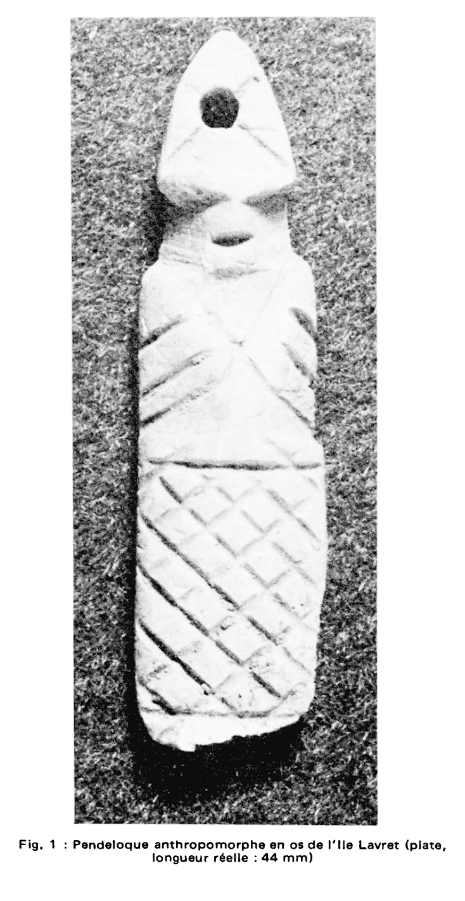
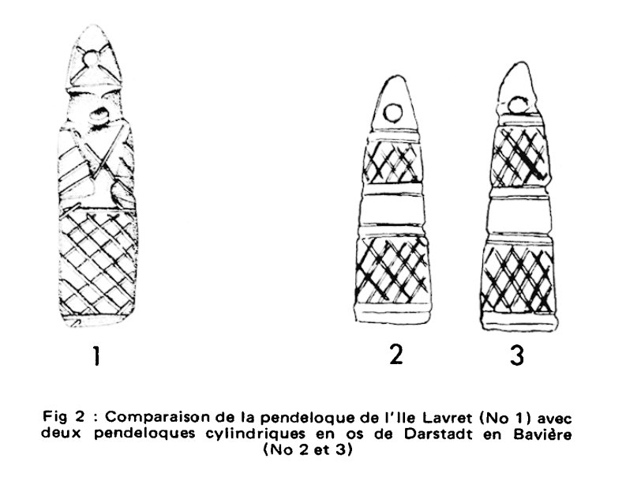

La pendeloque anthropomorphe de l’île Lavret

Découverte lors des fouilles dirigées par Pierre-Roland Giot, la pendeloque anthropomorphe en os de l’île Lavret constitue un objet singulier du très haut Moyen Âge armoricain.
L’analyse publiée en 1984 montre que l’objet a connu deux stades : une pendeloque géométrique initiale, proche des amulettes mérovingiennes germaniques, puis une anthropomorphisation secondaire réalisée au couteau.

La parenté morphologique avec des exemplaires de la vallée du Rhin et de Bavière (VIe–VIIe siècles) suggère une diffusion par voie maritime plutôt qu’une importation directe.
Cet objet illustre l’ouverture du royaume de Domnonée aux influences franques et rappelle l’insertion de la Bretagne littorale dans des réseaux d’échanges à large échelle.